Click on the image above to view the table
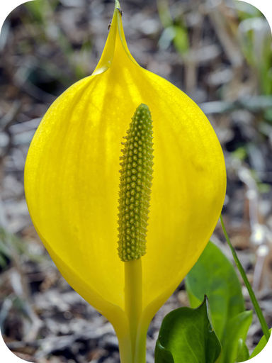
If you take a walk in a damp wooded area in the spring, you might smell this interesting plant before you notice its striking yellow hood. The hood surrounds a stalk covered with tiny flowers. It’s an intriguing sight—but don’t get too close! It grows on a plant called the skunk cabbage. It’s aptly named for its unpleasant odor, which smells like rotten meat. The plant stores food in its fleshy roots all winter so it can grow the hood and flowers in the spring. They emerge from the soil so early that there may still be snow on the ground, but the plant produces enough heat to melt the snow.
Why does the skunk cabbage put so much energy into producing its unusual, smelly flowers? As you will read in this chapter, flowering plants have devised many ways to attract pollinators to their flowers so they can reproduce. The skunk cabbage is no exception. What pollinators do you think its stinky flowers might attract?
Like the skunk cabbage, most of the plants you are familiar with produce flowers. However, plants existed for hundreds of millions of years before they evolved flowers. In fact, the earliest plants were different from most modern plants in several important ways. They not only lacked flowers. They also lacked leaves, roots, and stems. You might not even recognize them as plants. So why are the earliest plants placed in the plant kingdom? What traits define a plant?
Plants are multicellular eukaryotes with cell walls made of cellulose. Plant cells also have chloroplasts. In addition, plants have specialized reproductive organs. These are structures that produce reproductive cells. Male reproductive organs produce sperm, and female reproductive organs produce eggs. Male and female reproductive organs may be on the same or different plants.
Almost all plants make food by photosynthesis. Only about 1 percent of the estimated 300,000 species of plants have lost the ability to photosynthesize. These other species are consumers, many of them predators. How do plants prey on other organisms? The Venus fly trap in Figure below shows one way this occurs.
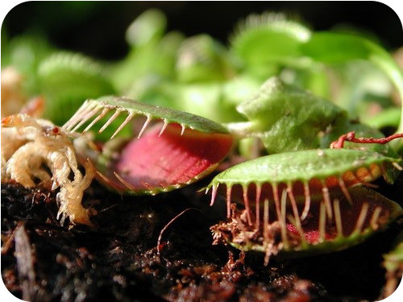
Venus fly trap plants use their flowers to trap insects. The flowers secrete enzymes that digest the insects, and then they absorb the resulting nutrient molecules.
Plants need temperatures above freezing while they are actively growing and photosynthesizing. They also need sunlight, carbon dioxide, and water for photosynthesis. Like most other organisms, plants need oxygen for cellular respiration and minerals to build proteins and other organic molecules. Most plants support themselves above the ground with stiff stems in order to get light, carbon dioxide, and oxygen. Most plants also grow roots down into the soil to absorb water and minerals.
The importance of plants to humans and just about all other life on Earth is staggering. Life as we know it would not be possible without plants. Why are plants so important?
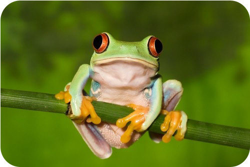
Red-eyed tree frogs like this one live in banana trees.
We obviously can’t live without plants, but sometimes they cause us problems. Many plants are weeds. Weeds are plants that grow where people don’t want them, such as gardens and lawns. They take up space and use resources, hindering the growth of more desirable plants. People often introduce plants to new habitats where they lack natural predators and parasites. The introduced plants may spread rapidly and drive out native plants. Many plants produce pollen, which can cause allergies. Plants may also produce toxins that harm human health (see Figure below ).
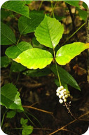
Poison ivy causes allergic skin rashes. It’s easy to recognize the plant by its arrangement of leaves in groups of three. That’s the origin of the old saying, “leaves of three, leave it be.”
All plants have a characteristic life cycle that includes alternation of generations . Plants alternate between haploid and diploid generations. Alternation of generations allows for both asexual and sexual reproduction. Asexual reproduction with spores produces haploid individuals called gametophytes . Sexual reproduction with gametes and fertilization produces diploid individuals called sporophytes . A typical plant’s life cycle is diagrammed in Figure below .
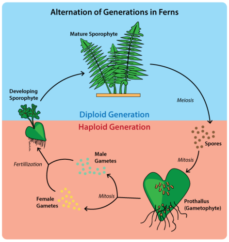
Life Cycle of Plants. This diagram shows the general life cycle of a plant.
Early plants reproduced mainly with spores and spent most of their life cycle as haploid gametophytes. Spores require little energy and matter to produce, and they grow into new individuals without the need for fertilization. In contrast, most modern plants reproduce with gametes using pollen and seeds, and they spend most of their life cycle as diploid sporophytes. Many modern plants can also reproduce asexually using roots, stems, or leaves. This is called vegetative reproduction . One way this can occur is shown in Figure below .
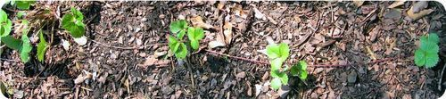
Strawberry plants have horizontal stems called stolons that run over the ground surface. If they take root, they form new plants.
As shown in Figure below , plants are thought to have evolved from an aquatic green alga. Later, they evolved important adaptations for land, including vascular tissues, seeds, and flowers. Each of these major adaptations made plants better suited for dry land and much more successful.
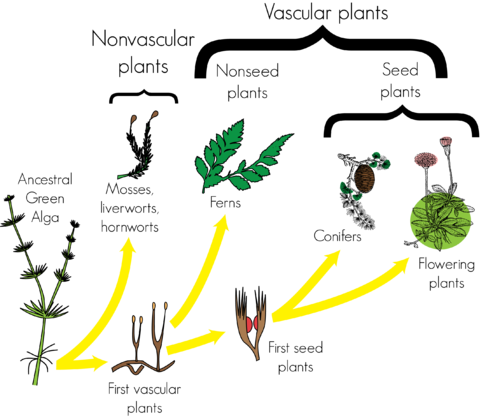
From a simple, green alga ancestor that lived in the water, plants eventually evolved several major adaptations for life on land.
The earliest plants were probably similar to the stonewort, an aquatic algae pictured in Figure below . Unlike most modern plants, stoneworts have stalks rather than stiff stems, and they have hair-like structures called rhizoids instead of roots. On the other hand, stoneworts have distinct male and female reproductive structures, which is a plant characteristic. For fertilization to occur, sperm need at least a thin film of moisture to swim to eggs. In all these ways, the first plants may have resembled stoneworts.
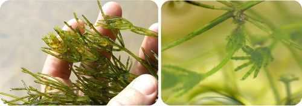
Modern stoneworts may be similar to the earliest plants.
By the time the earliest plants evolved, animals were already the dominant living things in the ocean. Plants were also constrained to the upper layer of water that received enough sunlight for photosynthesis. Therefore, plants never became dominant marine organisms. But when plants moved to land, everything was wide open. Why was the land devoid of other life? Without plants growing on land, there was nothing for other organisms to feed on. Land could not be colonized by other organisms until land plants became established.
Plants may have colonized the land as early as 700 million years ago. The oldest fossils of land plants date back about 470 million years. The first land plants probably resembled modern plants called liverworts, like the one shown in Figure below .
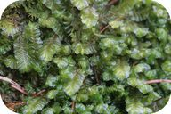
The first land plants may have been similar to liverworts like this one.
Colonization of the land was a huge step in plant evolution. Until then, virtually all life had evolved in the ocean. Dry land was a very different kind of place. The biggest problem was the dryness. Simply absorbing enough water to stay alive was a huge challenge. It kept early plants small and low to the ground. Water was also needed for sexual reproduction, so sperm could swim to eggs. In addition, temperatures on land were extreme and always changing. Sunlight was also strong and dangerous. It put land organisms at high risk of mutations.
Plants evolved a number of adaptations that helped them cope with these problems on dry land. One of the earliest and most important was the evolution of vascular tissues. Vascular tissues form a plant’s “plumbing system.” They carry water and minerals from soil to leaves for photosynthesis. They also carry food (sugar dissolved in water) from photosynthetic cells to other cells in the plant for growth or storage. The evolution of vascular tissues revolutionized the plant kingdom. The tissues allowed plants to grow large and endure periods of drought in harsh land environments. Early vascular plants probably resembled the fern shown in Figure below .
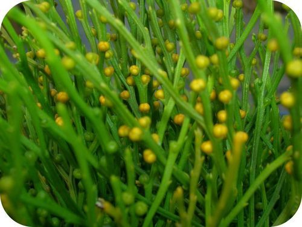
Early vascular plants may have looked like this modern fern.
In addition to vascular tissues, these early plants evolved other adaptations to life on land, including lignin, leaves, roots, and a change in their life cycle.
With all these advantages, it’s easy to see why vascular plants spread quickly and widely on land. Many nonvascular plants went extinct as vascular plants became more numerous. Vascular plants are now the dominant land plants on Earth.
For reproduction, early vascular plants still needed moisture. Sperm had to swim from male to female reproductive organs for fertilization. Spores also needed some water to grow and often to disperse as well. Of course, dryness and other harsh conditions made it very difficult for tiny new offspring plants to survive. With the evolution of seeds in vascular plants, all that changed. Seed plants evolved a number of adaptations that made it possible to reproduce without water. As a result, seed plants were wildly successful. They exploded into virtually all of Earth’s habitats.
Why are seeds so adaptive on land? A seed contains an embryo and a food supply enclosed within a tough coating. An embryo is a zygote that has already started to develop and grow. Early growth and development of a plant embryo in a seed is called germination . The seed protects and nourishes the embryo and gives it a huge head start in the “race” of life. Many seeds can wait to germinate until conditions are favorable for growth. This increases the offspring’s chance of surviving even more.
Other reproductive adaptations that evolved in seed plants include ovules, pollen, pollen tubes, and pollination by animals.
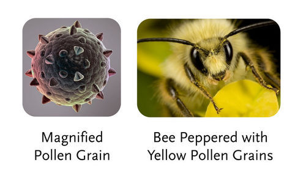
Individual grains of pollen may have prickly surfaces that help them stick to pollinators such as bees. What other animals pollinate plants?
The first seed plants formed seeds in cones. Cones are made up of overlapping scales, which are modified leaves (see Figure below ). Male cones contain pollen, and female cones contain eggs. Seeds also develop in female cones. Modern seed plants that produce seeds in cones are called gymnosperms .
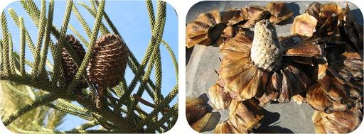
Gymnosperms produce seeds in cones (left). Each scale has a seed attached (right).
Later, seed plants called angiosperms evolved. They produce flowers , which consist of both male and female reproductive structures. The female reproductive structure in a flower includes an organ called an ovary . Eggs form in ovules inside ovaries, which also enclose and protect developing seeds after fertilization occurs. In many species of flowering plants, ovaries develop into fruits , which attract animals that disperse the seeds.
The scientific classification of modern land plants is under constant revision. Informally, land plants can be classified into the groups listed in Table below . The most basic division is between nonvascular and vascular plants. Vascular plants are further divided into those that reproduce without seeds and those that reproduce with seeds. Seed plants, in turn, are divided into those that produce seeds in cones and those that produce seeds in the ovaries of flowers. You can read more about each of these groups of plants in the next lesson.
Major divisions and types of modern land plants are organized in Table below . Why do the first five types of plants require a moist habitat?
Click on the image above to view the table
Albino redwood trees? Really? Yes, these pale ghosts that hide amid their gigantic siblings, only a few dozen albino redwood trees are known to exist. They are genetic mutants that lack the chlorophyll needed for photosynthesis. But how and why they survive is a scientific mystery. See http://www.kqed.org/quest/television/science-on-the-spot-albino-redwoods-ghosts-of-the-forest and http://www.kqed.org/quest/blog/2010/11/22/ghostbusters/ to find out about these wonders of the plant kingdom, and how geneticists are trying to understand the redwood genome.

Click on the image above for more content
Click on the image above for more content
1. What traits do all plants share?
2. What do plants need?
3. List reasons that plants are important to life on Earth.
4. When is a plant considered a weed?
5. What are vascular tissues? What is their function?
6. Draw a diagram of a typical plant life cycle that illustrates the concept of alternation of generations.
7. Explain why life on land was difficult for early plants. Why did plants need to become established on land before other organisms could colonize the land?
8. Compare the different types of plants in the Classification of Living Land Plants ( Table above ). Which type of plants would you say is most successful? Support your answer with data from the table.
9. Which major plant adaptation—vascular tissues or seeds—do you think was more important in the evolution of plants? Choose one of the two adaptations, and write a logical argument to support your choice.
10. Compare and contrast gymnosperms and angiosperms, and give an example of each.
Vascular plants are now the most common plants on Earth. However, nonvascular plants should not be ignored. They were the first plants to evolve, and some still survive today.
The types of living plants today reflect the evolutionary past of the plant kingdom. From tiny nonvascular mosses to large flowering and fruiting trees, there are modern plants that represent each of the major evolutionary changes that occurred in this important eukaryotic kingdom.
Nonvascular plants are called bryophytes . Despite the dominance of vascular plants today, more than 17,000 species of bryophytes still survive. They include liverworts, hornworts, and mosses.
Most bryophytes are small. They not only lack vascular tissues; they also lack true leaves, seeds, and flowers. Instead of roots, they have hair-like rhizoids to anchor them to the ground and to absorb water and minerals (see Figure below ). Bryophytes occupy niches in moist habitats. Without the adaptations of vascular plants, they are not very efficient at absorbing water.
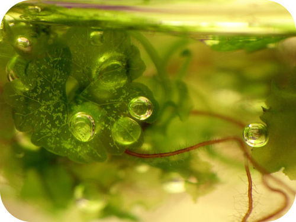
The rhizoids of a bryophyte (shown in purple) may be so fine that they are just one cell thick.
Bryophytes also depend on moisture to reproduce. Sperm produced by a male gametophyte must swim through a layer of rainwater or dew to reach an egg produced by a female gametophyte. The tiny, diploid sporophyte generation then undergoes meiosis to produce haploid spores. The spores may also need moisture to disperse.
The first nonvascular plants to evolve were the liverworts. The hornworts evolved somewhat later, and mosses apparently evolved last. Of all the bryophytes, mosses are most similar to vascular plants. Presumably, they share the most recent common ancestor with vascular plants.
The three types of modern nonvascular plants are pictured in Figure below .
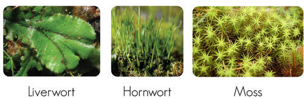
Liverworts, hornworts, and mosses are modern bryophytes. Liverworts are named for the liver-shaped leaves of some species. Hornworts are named for their horn-like sporophytes.
Vascular plants are known as tracheophytes , which literally means “tube plants.” The earliest vascular plants quickly came to dominate terrestrial ecosystems. Why were they so successful? It was mainly because of their tube-like vascular tissues.
The vascular tissues for which these plants are named are specialized to transport fluid. They consist of long, narrow cells arranged end-to-end, forming tubes. There are two different types of vascular tissues, called xylem and phloem. Both are shown in Figure below .
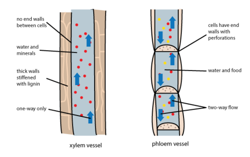
Xylem and phloem are the two types of vascular tissues in vascular plants.
The first vascular plants evolved about 420 million years ago. They probably evolved from moss-like bryophyte ancestors, but they had a life cycle dominated by the diploid sporophyte generation. As they continued to evolve, early vascular plants became more plant-like in other ways as well.
With their vascular tissues and other adaptations, early vascular plants had the edge over nonvascular plants. The could grow tall and take advantage of sunlight high up in the air. Bryophytes were the photosynthetic pioneers onto land, but early vascular plants were the photosynthetic pioneers into air.
Surviving descendants of early vascular plants include clubmosses and ferns. There are 1,200 species of clubmoss and more than 20,000 species of fern. Both types of vascular plants are seedless and reproduce with spores. Two examples are pictured in Figures below and below .
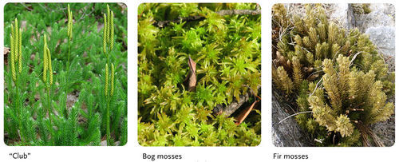
Clubmosses like these are often confused with mosses.
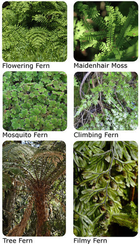
There’s no confusing ferns with mosses. Why do these ferns look more plant-like?
Seed plants are called spermatophytes . The evolution of seeds by vascular plants was a very big deal. In fact, it was arguably as important as the evolution of vascular tissues. Seeds solved the problem of releasing offspring into a dry world. Once seeds evolved, vascular seed plants and their descendants diversified to fill terrestrial niches everywhere. Today, vascular seed plants dominate Earth.
As shown in Figure below , a seed consists of at least three basic parts: the embryo, seed coat, and stored food.
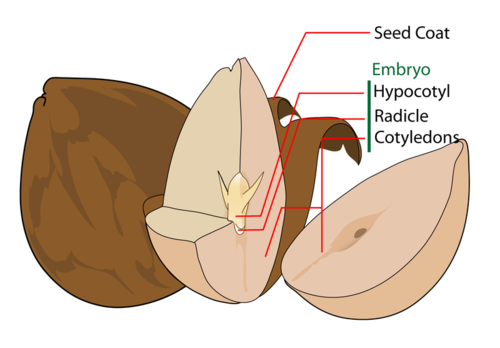
A typical plant seed, like this avocado seed, contains an embryo, seed coat, and endosperm. How does each part contribute to the successful development of the new plant?
Many seeds have additional structures that help them disperse. Some examples are shown in Figure below . Structures may help them travel in the wind or stick to animals. Dispersal of seeds away from parent plants helps reduce competition with the parents and increases the chance of offspring surviving.
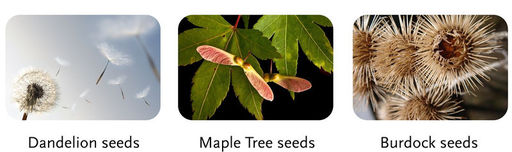
Dandelion seeds have tiny “parachutes.” Maple seeds have “wings” that act like little gliders. Burdock seeds are covered with tiny hooks that cling to animal fur.
The two major divisions of seed plants are the gymnosperms (seeds in cones) and angiosperms (seeds in ovaries of flowers). Figure below shows how the seeds of gymnosperms and angiosperms differ. Do you see the main difference between the two seeds? The angiosperm seed is surrounded by an ovary.
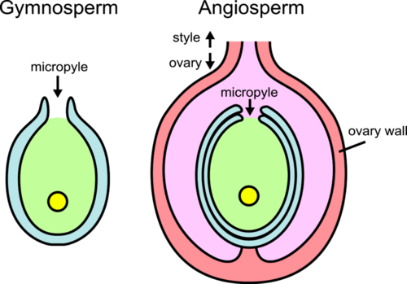
In gymnosperms, a seed develops on the scale of a cone. Only an angiosperm seed develops inside an ovary.
There are only about 1,000 living species of gymnosperms, whereas there are hundreds of thousands of living species of angiosperms. Because angiosperms are so numerous and diverse, they are described separately below. Living gymnosperms are typically classified in the divisions described in Table below . Most modern gymnosperms are trees with woody trunks. The majority are conifers such as pine trees.
Click on the image above to view the table
The earliest seed plants probably evolved close to 300 million years ago. They were similar to modern ginkgoes and reproduced with pollen and seeds in cones. Early seed plants quickly came to dominate forests during the Mesozoic Era, or Age of the Dinosaurs, about 250 to 65 million years ago.
As seed plants continued to evolve, Earth’s overall climate became drier, so early seed plants evolved adaptations to help them live with low levels of water. Some also evolved adaptations to cold. They had woody trunks and needle-like, evergreen leaves covered with a thick coating of waxy cuticle to reduce water loss. Some of the trees were huge, like today’s giant sequoia, a modern conifer (see Figure below ).
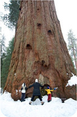
The people standing at the foot of this giant sequoia show just how enormous the tree is. Some early seed plants also grew very large.
Eventually, some gymnosperms started to evolve angiosperm-like traits. For example, cycad ancestors were the first plants to use insects as pollinators. They also used birds and monkeys to disperse their brightly colored seeds. Of modern gymnosperms, Gnetae probably share the most recent common ancestor with angiosperms. Among other similarities, Gnetae produce nectar , a sweet, sugary liquid that attracts insect pollinators. Most modern flowering plants also produce nectar.
Angiosperms, or flowering seed plants, form seeds in ovaries. As the seeds develop, the ovaries may develop into fruits. Flowers attract pollinators, and fruits encourage animals to disperse the seeds.
A flower consists of male and female reproductive structures. The main parts of a flower are shown in Figure below . They include the stamen, pistil, petals, and sepals.
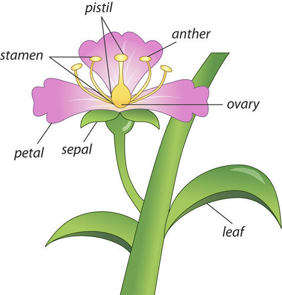
A flower includes both male and female reproductive structures.
Many flowers have bright colors, strong scents, and sweet nectar to attract animal pollinators. They may attract insects, birds, mammals, and even reptiles. While visiting a flower, a pollinator picks up pollen from the anthers. When the pollinator visits the next flower, some of the pollen brushes off on the stigma. This allows cross-pollination, which increases genetic diversity.
See The beauty of pollination at http://www.youtube.com/v/xHkq1edcbk4?version for an amazing look at this process.
Click on the image above for more content
Although flowers and their components are the major innovations of angiosperms, they are not the only ones. Angiosperms also have more efficient vascular tissues. In addition, in many flowering plants, the ovaries ripen into fruits. Fruits are often brightly colored, so animals are likely to see and eat them and disperse their seeds (see Figure below ).
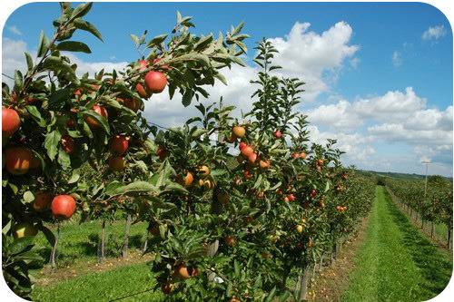
Brightly colored fruits attract animals that may disperse their seeds. It’s hard to miss the bright red apples on these trees.
Flowering plants are thought to have evolved at least 200 million years ago from gymnosperms like Gnetae. The earliest known fossils of flowering plants are about 125 million years old. The fossil flowers have male and female reproductive organs but no petals or sepals.
Scientists think that the earliest flowers attracted insects and other animals, which spread pollen from flower to flower. This greatly increased the efficiency of fertilization over wind-spread pollen, which might or might not actually land on another flower. To take better advantage of this “animal labor,” plants evolved traits such as brightly colored petals to attract pollinators. In exchange for pollination, flowers gave the pollinators nectar.
Giving free nectar to any animal that happened to come along was not an efficient use of resources. Much of the pollen might be carried to flowers of different species and therefore wasted. As a result, many plants evolved ways to “hide” their nectar from all but very specific pollinators, which would be more likely to visit only flowers of the same species. For their part, animal pollinators co-evolved traits that allowed them to get to the hidden nectar. Two examples of this type of co-evolution are shown in Figure below .

The bat is active at night, so bright white, night-blooming flowers attract it. The hummingbird hawk-moth has a long needle-like mouthpart (called a proboscis) to reach nectar at the bottom of the tube-shaped flowers. In each case, the flowering plant and its pollinator co-evolved to become better suited for their roles in the symbiotic relationship.
Some of the most recent angiosperms to evolve are grasses. Humans started domesticating grasses such as wheat about 10,000 years ago. Why grasses? They have many large, edible seeds that contain a lot of nutritious stored food. They are also relatively easy to harvest. Since then, humans have helped shaped the evolution of grasses, as illustrated by the example in Figure below . Grasses supply most of the food consumed by people worldwide. What other grass seeds do you eat?
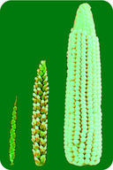
The plant on the left, called teosinte, is the ancestor of modern, domesticated corn, shown on the right. An intermediate stage is pictured in the middle. How were humans able to change the plant so dramatically?
There are more than a quarter million species of flowering plants, and they show tremendous diversity. Nonetheless, almost all flowering plants fall into one of three major groups: monocots, eudicots, or magnolids. The three groups differ in several ways. For example, monocot embryos form just one cotyledon, whereas eudicot and magnolid embryos form two cotyledons. The arrangement of their vascular tissues is also different. Examples of the three groups of flowering plants are given in Table below .
Click on the image above to view the table
1. Describe nonvascular plants.
2. Identify the parts of a seed and the role of each part.
3. Name and describe the division of gymnosperms.
4. Describe the male and female reproductive structures of flowers and their functions.
5. State how fruits help flowering plants reproduce.
6. Charles Darwin predicted the existence of a moth with a very long “tongue” after he discovered a species of night-blooming flowers with extremely long, tube-shaped blooms. About 50 years after Darwin died, such a moth was discovered. Apply lesson concepts to explain the basis for Darwin’s prediction.
7. Compare and contrast xylem and phloem.
8. How did vascular tissues and lignin allow vascular plants to be “photosynthetic pioneers into air”?
9. Explain how flowering plants and their animal pollinators co-evolved.
In this chapter, you read about the evolution and classification of plants. In the next chapter, you can read more about the special cells, tissues, and organs of plants that make them such important and successful organisms.
Opening image copyright naturediver, 2012. http://www.shutterstock.com . Used under license from Shutterstock.com.
For Table above , from top to bottom,
For Table above , from top to bottom,
For Table above , from left to right, top to bottom,
{kind=link}
{kind=link}
{kind=link}
{kind=link}
{kind=link}
{kind=link}
{kind=link}
{kind=link}